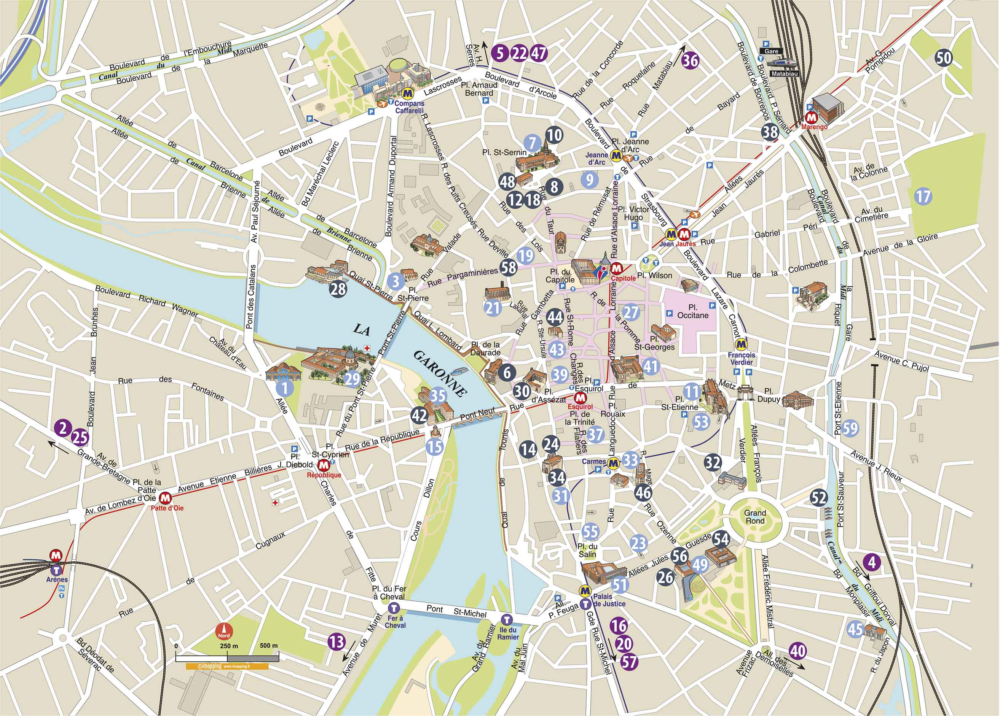

Un rapide plan du patrimoine historique et contemporain Toulousain.
76 allées Charles-de-Fitte MH MF H Sam et dim de 12 h à 18 h VISITES GUIDÉES, sam et dim à 14 h 30 et 16 h G Comment amener la jeunesse à appréhender le patrimoine et se sensibiliser à l’art sous toutes ses formes ? Alors même que le bâtiment du XIXe siècle et les oeuvres situées dans les cours latérales invitent à un parcours patrimonial et muséal, l’exposition « Suspended animation » présente 9 artistes confrontés au nouveau monde numérique dont ils proposent une approche critique par l’animation. Entre jeunesse et patrimoine, le musée des Abattoirs offre aux visiteurs l’occasion de lier, à travers l’art et son écrin architectural, le réel et le virtuel.En savoir + sur l'expo.
Avenue des Arènes romaines MH Sam et dim de 10 h à 19 h G VISITES GUIDÉES (2 h) G Sam à 10 h et 15 h, dim à 15 h et 17 h
12 place Saint-Pierre MH, HP Sam et dim de 10 h à 19 h G VISITES GUIDÉES Sam et dim toutes les 40 mn de 10 h à 12 h et de 15 h à 19 h G
Conseil départemental de la Haute-Garonne 11 boulevard Griffoul-Dorval H, G Sam de 13 h à 20 h et le dim de 13 h à 18 h H, G VISITES des magasins et de l’atelier de restauration avec démonstration de 14 h à 17 h G SPECTACLE « Des deux côtés des Pyrénées » par le duo Sostenuto (fl ûte et guitare) présente des oeuvres de compositeurs français et espagnols : Fauré, Ravel, Séverac, Pedrell, Albeniz, Falla, Sarasate. Sam à 18 h (durée 1 h 30) G ATELIERS POUR ENFANTS Calligraphie, reliures charnières piano et reliures japonaises, chasse au trésor avec atelier moulage de sceaux. G EXPOSITION « Être un enfant à travers les âges » : école obligatoire, droits des enfants,travail des enfants, l’école pendant la guerre, loisirs, vacances.
25 rue Mengaud H, G VISITE : Avec démonstration de l’impression d’une lithographie et/ou d’une gravure Sam à 10 h 30, 14 h 30 et dim à 10 h 30 (sur réservation au 09 50 82 40 74 - 7 personnes max). G pour les acheteurs d’une Carte Litho (3 euros) ou estampe imprimée à l’atelier.
Quai de la Daurade MH Sam et dim : 8 h 30 - 19 h G
Place Saint-Sernin MH, HP, G Sam de 8 h 30 à 19 h G Dim de 8 h 30 à 19 h 30 G Accueil par des bénévoles. CRYPTE DÉAMBULATOIRE Sam de 10 h à 18 h et dim de 11 h 30 à 18 h PETITS CONCERTS D’ORGUE (30 mn) Sam et dim à 12 h 30 et 16 h 30
... Ensuite allez voir vous même parce que c'est trop long à faire.